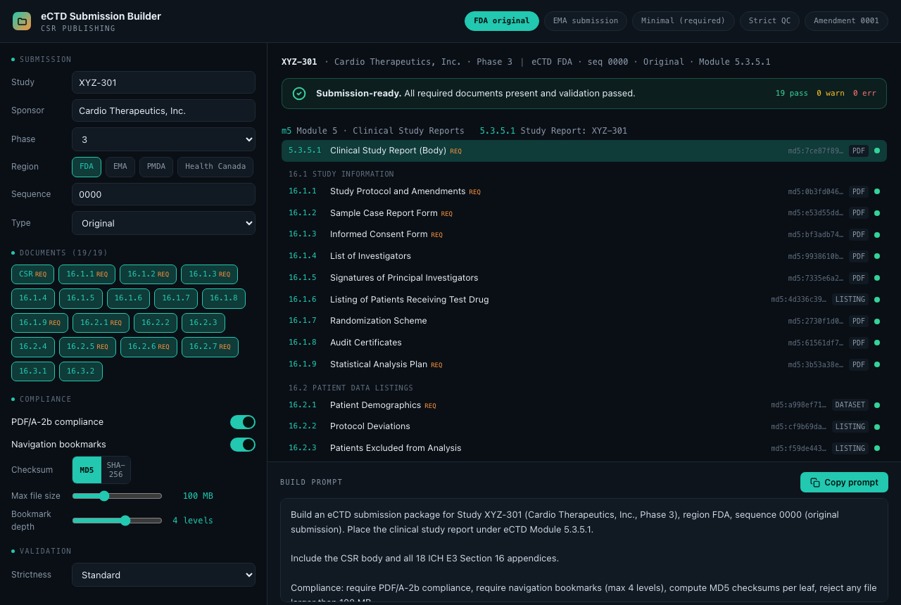

CSR eCTD Publishing
An interactive eCTD submission builder: configure the study, region, and documents, watch the package tree and validation update live, then copy a build-ready prompt. Based on the CSR Publishing tool, recreated here as a standalone playground.
Launch live demo
Runs in your browser
What it does
Organizes a clinical study report's documents into the ICH E3 / eCTD Module 5 structure, validates them against PDF and eCTD rules, computes a checksum per document, and generates the eCTD backbone (index.xml) for a regulatory submission.
How it works
- Toggle which CSR documents (ICH E3 Section 16) to include, and set the region, sequence, and compliance options.
- The eCTD tree (Module 5.3.5.1), per-leaf checksums, and validation (PDF and eCTD rules, severity-graded) update live as you configure.
- Copy a build-ready prompt that captures the whole submission spec, ready to paste back into the tool or an assistant.
eCTDICH E3
ValidationMD5
The demo uses a sample CSR (Study XYZ-301). The full CSR Publishing app handles real document uploads, annotations, and a packaged .zip eCTD export.

Static preview - click to open the live, interactive demo